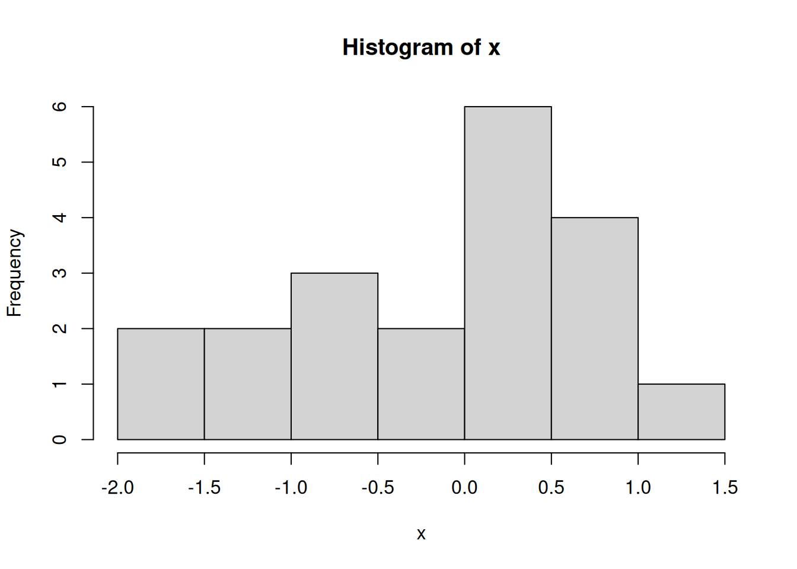
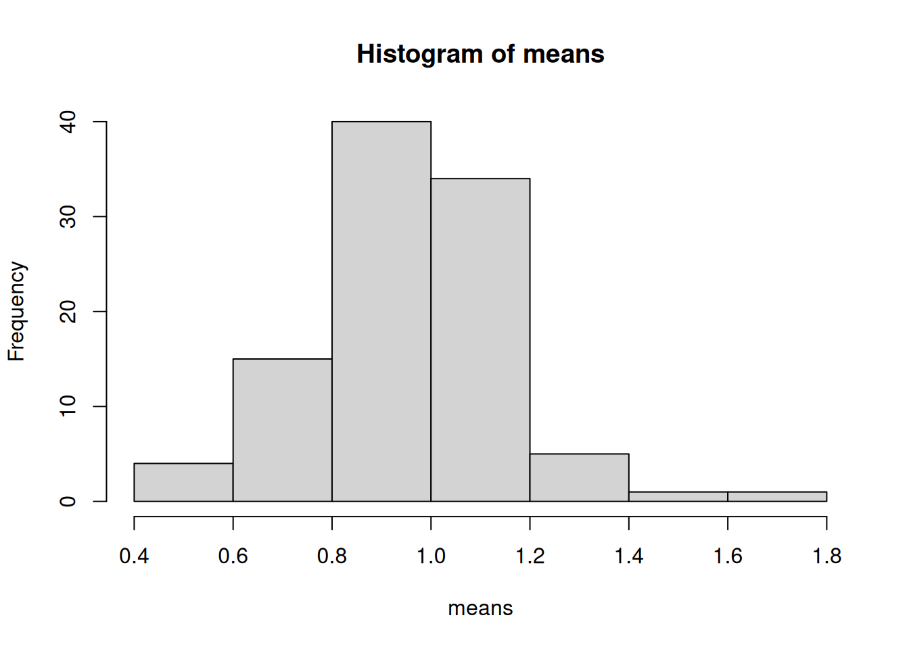
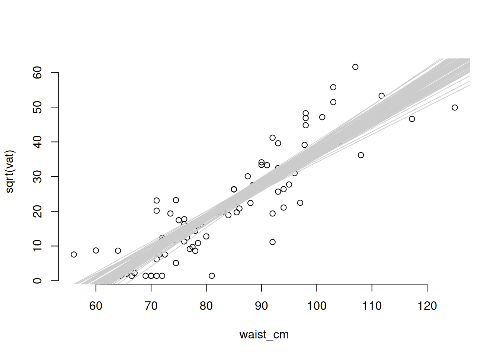

# install.packages("ggformula")
# install.packages("mosaic")
# remotes::install_github("ProjectMOSAIC/mosaicModel")
library("ggformula")
library("mosaic")
library("mosaicModel")12 Statistics
Learning Goals
After this lesson, you should be able to:
- Explain the difference between a population and a sample
12.1 Introduction
It is useful to begin with some concrete examples of statistical questions to motivate the material that we’ll cover in this lesson. This will also help confirm that your R environment is working.
Note
The examples that follow use several data sets, which we read directly from CSV files.
The data sets come from the fosdata package, which you can optionally install to your computer in order to get access to all of the associated help files. The fosdata package is hosted on GitHub but not CRAN, so to install it you need another package, remotes, for its install_github function. Here’s how to install both:
# This is optional!
# install.packages("remotes")
remotes::install_github("speegled/fosdata")Now load the data sets:
mice_pot = read.csv("https://raw.githubusercontent.com/ucdavisdatalab/adventures_in_data_science/master/data/mice_pot.csv")
barnacles = read.csv("https://raw.githubusercontent.com/ucdavisdatalab/adventures_in_data_science/master/data/barnacles.csv")
Births78 = read.csv("https://raw.githubusercontent.com/ucdavisdatalab/adventures_in_data_science/master/data/births.csv")
smoking = read.csv("https://raw.githubusercontent.com/ucdavisdatalab/adventures_in_data_science/master/data/smoking.csv")
adipose = read.csv("https://raw.githubusercontent.com/ucdavisdatalab/adventures_in_data_science/master/data/adipose.csv")12.1.1 The mice_pot Data Set
The mice_pot data set comes from an experiment where four groups of mice were dosed with different levels of THC. There was a low, medium, and high dosage group, as well as a control group that got no THC. The mice were then observed for a while and their total movement was quantified as a percentage of the baseline group mean. Two statistical questions that might arise here are:
- Were there differences in the typical amount of movement between mice of different groups?
- What was the average amount of movement by mice in the medium dose group?
Both of these questions can be approached by summarizing the sample with descriptive statistics. Here’s one way to compute the average (mean) movement for each group:
aggregate(mice_pot["percent_of_act"], mice_pot["group"], mean) group percent_of_act
1 0.3 97.32250
2 1 99.05235
3 3 70.66787
4 VEH 100.00000The means aren’t identical! So there are clearly differences between all of the groups, right? Yes, in terms of this sample. But if you want to generalize your conclusion to cover what would happen to other mice that weren’t in the study, then you need to think about the population. In this case, that’s the population of all the mice that could have been dosed with THC.
Because we can’t see data from mice that weren’t part of the study, we rely on statistical inference to reach conclusions about the population. How is that possible? Statistical methods can tell us about the distribution of the sample relative to the population.
12.1.2 The barnacles Data Set
This data set was collected by counting the barnacles in 88 grid squares on the Flower Garden Banks coral reef in the Gulf of Mexico. The counts were normalized to barnacles per square meter. Some questions that you might approach with statistical methods are:
- What is the average number of barnacles per square meter, and is it greater than 300?
You can use R to compute the average:
mean(barnacles$per_m)[1] 332.0186From that calculation, we see that the mean is 332 barnacles per square meter, which is greater than 300. But again, the first calculation has told us only about the mean of the particular locations that were sampled. Wouldn’t it be better to answer the questions in reference to the number of barnacles per square meter of reef, rather than square meter of measurement? Here, the population is the entire area of the Flower Garden Banks reef. Again, we will be able to answer the questions relative to the entire reef by working out the sample mean’s distribution relative to the population.
12.1.3 Sample and Population
Samples and populations are fundamental concepts in statistics. A sample is data—the hard numbers that go into your calculations. The population is trickier: it’s the units to which you are able to generalize your conclusions.
For the barnacles data, in order to draw conclusions about the population (the entire Flower Garden Banks reef), the sample must be carefully selected to ensure it is representative. For instance, randomly sampling locations so that any location on the reef might be selected is one sampling strategy.
For the mice_pot data, the population is all the mice that might have been selected for use in the experiment. How big that population is depends on how the mice were selected for the experiment. Randomly selecting the experimental units from a group is a common way of ensuring that the results can generalize to that whole group.
A non-random sample tends to mean that the population to which you can generalize is quite limited. What sort of population do you think we could generalize about if we recorded the age of everyone in this class?
12.2 Uses of Simulation
The study of statistics started in the 1800s, but slowly. Most statistical methodology and theory was developed during the first half of the 20th century—a time when data and processing power were in short supply. Today, that’s not so much the case. If you did the assigned reading, then you saw that statisticians are very much still grappling with how to teach statistics in light of the advances in computing over the past 40 years.
Traditionally, statisticians are very concerned with assessing the normality of a sample, because the conclusions you get from traditional statistical methods depend on a sample coming from a normal distribution. Nowadays, there are a lot of clever methods that can avoid the need to assume normality. We’re going to learn some of those methods, because they usually don’t require any complicated math. If you want to know more, one of the assigned readings was the introduction to a book that would be a great reference for self-guided study.
We will use simulation-based methods extensively today.
This is the density curve of a standard normal distribution:
And this is a histogram of samples taken from that same distribution:
# Sample 20 numbers from a standard normal and draw the histogram
x = rnorm(20)
round(sort(x), 2) [1] -1.86 -1.83 -1.39 -1.22 -0.84 -0.76 -0.57 -0.29 -0.09 0.06 0.08 0.20
[13] 0.31 0.36 0.48 0.57 0.75 0.78 0.85 1.45hist(x)
Do the numbers seem to come from the high-density part of the normal density curve? Are there any that don’t? It isn’t surprising if some of your x samples are not particularly close to zero. One out of twenty (that’s five percent) samples from a standard normal population are greater than two or less than negative two, on average. That’s “on average” over the population. Your sample may be different.
Here is the density of the exponential distribution:
And here is a histogram of 20 samples taken from that distribution:
# Sample 20 numbers from a histogram and plot the histogram
ex = rexp(20)
round(sort(ex), 2) [1] 0.04 0.09 0.22 0.23 0.28 0.29 0.45 0.46 0.56 0.56 0.61 0.64 0.76 0.84 0.93
[16] 0.97 1.04 1.19 1.38 3.21hist(ex)The histograms are clearly different, but it would be difficult to definitively name the distribution of the data by looking at a sample.
12.3 Mathematical Statistics
The mean has some special properties: you’ve seen how we can calculate the frequency of samples being within an interval based on known distributions. But we need to know the distribution. It turns out that the distribution of the sample mean approaches the normal distribution as the sample size increases, for almost any independent data. That allows us to create intervals and reason about the distribution of real data, even though the data’s distribution is unknown.
12.3.1 Law of Large Numbers
The Law of Large Numbers says that if the individual measurements are independent, then the mean of a sample tends toward the mean of the population as the sample size gets larger. This is what we’d expect, since we showed the rate at which the variance of the sample mean gets smaller is \(1/n\).
nn = c(1, 2, 4, 8, 12, 20, 33, 45, 66, 100)
means = sapply(nn, function(n) mean(rnorm(n)))
plot(nn, means, bty = 'n', ylab = "sample mean")
abline(h = 0, lty = 2)12.3.2 Central Limit Theorem
The most important mathematical result in statistics, the Central Limit Theorem, says that if you take (almost) any sample of random numbers and calculate its mean, the distribution of the mean tends toward a normal distribution. We illustrate the “tending toward” with an arrow and it indicates that the distribution of a sample mean is only approximately normal. But if the original samples were from a normal distribution then the sample mean has an exactly normal distribution. From here, I’ll start writing the mean of a random variable \(X\) as \(\bar{X}\) and the mean of a sample \(x\) as \(\bar{x}\).
\[ \bar{X} \rightarrow N(\mu, \frac{\sigma^2}{n}) \]
And because of the identities we learned before, you can write this as
\[\frac{\bar{X} - \mu}{\sigma/\sqrt{n}} \rightarrow N(0, 1) \]
This is significant because we can use the standard normal functions on the right, and the data on the left, to start answering questions like, “what is the 95% confidence interval for the population mean?”
# Generate 20 samples from a uniform distribution and plot their histogram
N = 20
u = rexp(N)
hist(u)# Generate 100 repeated samples of the same size, calculate the mean of each
# one, and plot the histogram of the means.
B = 100
means = numeric(B)
for (i in 1:B) {
means[[i]] = mean(rexp(N))
}
hist(means)
What happens as B and N get larger or smaller? Do they play different roles?
12.4 Statistical Inference
12.4.1 Confidence Intervals
Recall the mice_pot data set, which contains data from an experiment where mice were dosed with THC and then measured for motor activity as a percentage of their baseline activity. We are going to look at the group that got a medium dose of THC.
# Extract just the mice that got the medium dose of THC
mice_med = mice_pot[ mice_pot$group == 1, ]
# Assess normality with histogram and QQ plot
hist(mice_med$percent_of_act)qqnorm(mice_med$percent_of_act)12.4.1.1 Finding Confidence Intervals
Now we are using our sample to make some determination about the population, so this is statistical inference. Our best guess of the population mean is the sample mean, mean(mice_med$percent_of_act), which is 99.1%. But to get a confidence interval, we need to use the formula:
\[ \bar{x} \pm t_{n-1, 0.1} * S / \sqrt{n} \]
Fortunately, R can do all the work for us:
# 80% confidence interval for location of mice_med mean:
t.test(mice_med$percent_of_act, conf.level = 0.8)
One Sample t-test
data: mice_med$percent_of_act
t = 13.068, df = 11, p-value = 4.822e-08
alternative hypothesis: true mean is not equal to 0
80 percent confidence interval:
88.71757 109.38712
sample estimates:
mean of x
99.05235 12.4.2 Two-population Test
The test of \(\mu_0 = 100\) is a one-population test because it seeks to compare a single population against a specified standard. On the other hand, you may wish to assess the null hypothesis that the movement of mice in the high-THC group is equal to the movement of mice in the medium-THC group. This is called a two-population test, since there are two populations to compare against each other. The null hypothesis is \(\mu_{0, med} = \mu_{0, high}\). Testing a two-population hypothesis requires first assessing normality and also checking whether the variances are equal. There are separate procedures when the variances are equal vs. unequal.
# Extract the samples to be compared
group1 = mice_pot$percent_of_act[mice_pot$group == 1]
group3 = mice_pot$percent_of_act[mice_pot$group == 3]
# Check for equal variances---these are close enough
var(group1)[1] 689.4729var(group3)[1] 429.4551# Confirm equal variances with a boxplot
boxplot(group1, group3)# Check whether the high-THC mice movement is normal
# (we already checked for the medium-dose mice)
qqnorm(group3)# Two-pop test
t.test(group1, group3, var.equal=TRUE)
Two Sample t-test
data: group1 and group3
t = 2.7707, df = 20, p-value = 0.0118
alternative hypothesis: true difference in means is not equal to 0
95 percent confidence interval:
7.014608 49.754345
sample estimates:
mean of x mean of y
99.05235 70.66787 12.4.3 Hypothesis Tests for Non-normal Data
Just as with the confidence intervals, there is a bootstrap hypothesis test that can be used where the data are not normal. There are other options, too, with clever derivations. The one I’ll show you is the Wilcoxon test, which is based on the ranks of the data.
Since we’ve already seen that the barnacles per square meter data are not normal, I will illustrate testing the null hypothesis that \(\mu_0 = 300\) barnacles per square meter. This is a one-population test, and a two-sided alternative.
# Wilcoxon test for 300 barnacles per square meter
wilcox.test(barnacles$per_m)
Wilcoxon signed rank test with continuity correction
data: barnacles$per_m
V = 3916, p-value = 3.797e-16
alternative hypothesis: true location is not equal to 012.5 Regression
Regression is a mathematical tool that allows you to estimate how some response variable is related to some predictor variable(s). There are methods that handle continuous or discrete responses of many different distributions, but we are going to focus on linear regression here.
Linear regression means that the relationship between the predictor variable(s) and the response is a linear one. To illustrate, we’ll create a plot of the relationship between the waist measurement and body mass index (BMI) of 81 adults:
# Plot the relationship between the waist_cm and bmi variables
with(adipose, plot(waist_cm, bmi), bty = 'n')The relationship between the two is apparently linear (you can imagine drawing a straight line through the data). The general mathematical form of a linear regression line is:
\[ y = a + \beta x + \epsilon \]
Here, the response variable (BMI) is called \(y\) and the predictor (waist measurement) is \(x\). The coefficient \(\beta\) indicates how much the response changes for a change in the predictors (that is, the expected change in BMI with a 1 cm change in waist measurement). Variable \(a\) denotes the intercept, which is a constant offset that aligns the mean of \(y\) with the mean of \(x\). Finally, \(\epsilon\) is the so-called residual error in the relationship. It represents the variation in the response that is not due to the predictor(s).
12.5.1 Fitting a Regression Line
The R function to fit the model is called lm. Let’s take a look at an example:
# Fit the linear regression BMI vs waist_cm
fit = lm(bmi ~ waist_cm, data = adipose)
# Plot the fitted regression: begin with the raw data
with(adipose, plot(waist_cm, bmi, bty = 'n'))
# Now plot the fitted regression line (in red)
abline(coef(fit)[[1]], coef(fit)[[2]], col = 'red')12.5.2 Assumptions and Diagnostics
“Fitting” a linear regression model involves estimating \(a\) and \(\beta\) in the regression equation. You can can do this fitting procedure using any data, but the results won’t be reliable unless some conditions are met. The conditions are:
- A linear model is appropriate (linearity).
- The residual error is normally distributed.
- The variance of the residual error is constant for all observations.
- Observations are independent.
The first of these conditions can’t be checked—it has to do with the design of the experiment. The rest can be checked, though, and I’ll take them in order.
12.5.2.1 Checking Linearity
In the case of a simple linear regression model (one predictor variable), you can check this by plotting the predictor against the response and looking for a linear trend. If you have more than one predictor variable, then you need to plot the predictions against the response to look for a linear trend. We’ll see an example by adding height as a predictor for BMI (in addition to waist measurement).
# Linear model for BMI using waist size and height as predictors
fit2 = lm(bmi ~ waist_cm + stature_cm, data=adipose)
# Plot the fitted versus the predicted values
plot(fit2$fitted.values, adipose$bmi, bty = 'n')12.5.2.2 Checking that the Residuals Are Normally Distributed
We have already learned about the QQ plot, which shows visually whether some values are Normally distributed. In order to depend upon the fit from a linear regression model, we need to see that the residuals are Normally distributed, and we use the QQ plot to check.
12.5.2.3 Checking that the Variance Is Constant
In an earlier part, we saw that the variance is the average of the squared error. But that would just be a single number, when we want to see if there is a trend. So like the QQ plot, you’ll plot the residuals and use your eyeball to discern whether there is a trend in the residuals or if they are approximately constant - this is called the scale-location plot. The QQ plot and scale-location plot are both created by plotting the fitted model object
# Set up the pattern of the panels
layout(matrix(1:4, 2, 2))
# Make the diagnostic plots
plot(fit)The “Residuals vs. Fitted” plot is checking whether the linear model is correct. There should be no obvious pattern if the data are linear (as is the case here). The Scale-Location plot will have no obvious pattern if the variance of the residuals is constant, as is the case here (you might see a slight pattern in the smoothed red line but it isn’t obvious). And the QQ plot will look like a straight line if the residuals are from a Normal distribution, as is the case here. So this model is good. The fourth diagnostic plot is the Residuals vs. Leverage plot, which is used to identify influential outliers. We won’t get into that here.
12.5.3 Functions for Inspecting Regression Fits
When you fit a linear regression model, you are estimating the parameters of the regression equation. In order to see those estimates, use the summary() function on the fitted model object.
# Get the model summary
summary(fit2)
Call:
lm(formula = bmi ~ waist_cm + stature_cm, data = adipose)
Residuals:
Min 1Q Median 3Q Max
-4.1290 -1.0484 -0.2603 1.2661 5.2572
Coefficients:
Estimate Std. Error t value Pr(>|t|)
(Intercept) 14.38196 3.82700 3.758 0.000329 ***
waist_cm 0.29928 0.01461 20.491 < 2e-16 ***
stature_cm -0.08140 0.02300 -3.539 0.000680 ***
---
Signif. codes: 0 '***' 0.001 '**' 0.01 '*' 0.05 '.' 0.1 ' ' 1
Residual standard error: 1.724 on 78 degrees of freedom
Multiple R-squared: 0.844, Adjusted R-squared: 0.84
F-statistic: 211 on 2 and 78 DF, p-value: < 2.2e-16Here you can see that the average marginal effect of one additional centimeter of waist measurement is to increase BMI by 0.3 and an additional centimeter of height is associated with a change to BMI of r round(coef(fit2)[[3]], 2). You can get the coefficients from the fitted model object using the coef() function, and there are some other functions that allow you to generate the values shown in the summary table.
# Get the coefficients of the fitted regression
beta = coef(fit2)
round(beta, 2)(Intercept) waist_cm stature_cm
14.38 0.30 -0.08 Get the variance-covariance matrix:
round(vcov(fit2), 4)# Compare the square root of the diagonals of the variance-covariance matrix to
# the standard errors are reported in the summary table:
se = sqrt(diag(vcov(fit2)))
# Here are the standard errors:
round(se, 3)(Intercept) waist_cm stature_cm
3.827 0.015 0.023 # Calculate the t-statistics for the regression coefficients (compare these to
# the t-statistics reported in the summary table)
t_stats = beta / se
# Show the t-statistics:
round(t_stats, 2)(Intercept) waist_cm stature_cm
3.76 20.49 -3.54 # Calculate the p-values:
pval = 2 * pt(abs(t_stats), df=78, lower.tail=FALSE)
round(pval, 4)(Intercept) waist_cm stature_cm
3e-04 0e+00 7e-04 # This is the residual standard error:
sd(fit2$residuals) * sqrt(80 / 78)[1] 1.72357# R-squared is the proportion of variance
# explained by the regression model
round(1 - var(fit2$residuals) / var(adipose$bmi), 3)[1] 0.84412.5.4 A Model that Fails Diagnostics
We’ve seen a model that has good diagnostics. Now let’s look at one that doesn’t. This time, we’ll use linear regression to make a model of the relationship between waist measurement and the visceral adipose tissue fat (measured in grams). The visceral adipose tissue fat is abbreviated vat in the data. First, since the model uses a single predictor variable, let’s look at the relationship with a pair plot.
# plot the relationship between waist_cm and vat
with(adipose, plot(waist_cm, vat, bty = 'n'))The plot is obviously not showing a linear relationship, which will violate one of the conditions for linear regression. Also, you can see that there is less variance of vat among the observations that have smaller waist measurements. So that will violate the assumption that the residual variance has no relationship to the fitted values. To see how these will show up in the diagnostic plots, we need to fit the linear regression model.
# Estimate the model for vat
fit_vat = lm(vat ~ waist_cm, data = adipose)
# There is no problem creating the summary table:
summary(fit_vat)
Call:
lm(formula = vat ~ waist_cm, data = adipose)
Residuals:
Min 1Q Median 3Q Max
-996.25 -265.96 -61.87 191.24 1903.46
Coefficients:
Estimate Std. Error t value Pr(>|t|)
(Intercept) -3604.196 334.241 -10.78 <2e-16 ***
waist_cm 51.353 3.937 13.04 <2e-16 ***
---
Signif. codes: 0 '***' 0.001 '**' 0.01 '*' 0.05 '.' 0.1 ' ' 1
Residual standard error: 479 on 79 degrees of freedom
Multiple R-squared: 0.6829, Adjusted R-squared: 0.6789
F-statistic: 170.2 on 1 and 79 DF, p-value: < 2.2e-16# Show the diagnostic plots
layout(matrix(1:4, 2, 2))
plot(fit_vat)There is obviously a curved pattern in the Residuals vs. Fitted plot, and in the Scale vs. Location plot. Residuals vs. Fitted shows a fan-shaped pattern, too, which reflects the increasing variance among the greater fitted values. The QQ plot is not a straight line, although the difference is not as obvious. In particular, the upper tail of residuals is heavier than expected. Together, all of these are indications that we may need to do a log transformation of the response. A log transformation helps to exaggerate the differences between smaller numbers (make the lower tail heavier) and collapse some difference among larger numbers (make the upper tail less heavy).
# Fit a regression model where the response is log-transformed
fit_log = lm(log(vat) ~ waist_cm, data = adipose)
# Plot the diagnostics for the log-transformed model
plot(fit_log)The diagnostics do not look good after the log transformation, but now the problem is the opposite: a too-heavy lower tail and residual variance decreases as the fitted value increases. Perhaps a better transformation is something in between the raw data and the log transform. Try a square-root transformation:
# Fit a model where the vat is square root transformed
fit_sqrt = lm(sqrt(vat) ~ waist_cm, data = adipose)
# Plot the diagnostics for the log-transformed model
plot(fit_sqrt)These look acceptable for real-world data.
12.5.5 Predictions and Variability
There are two scales of uncertainty for a regression model: uncertainty in the fitted relationship, and the uncertainty of a predicted outcome. The uncertainty of a prediction is always greater because it is calculated by adding the uncertainty of the fitted line to the uncertainty of a single data point around that fitted line. We can illustrate using the example of the model we just created to relate the waist measurement to the square root of vat.
For this example, we’ll need the mvtnorm library to be loaded:
# install.packages("mvtnorm")
library("mvtnorm")
# Draw the data on the transformed scale
with(adipose, plot(waist_cm, sqrt(vat), bty = 'n'))
# Plot the fitted regression line
abline(coef(fit_sqrt)[[1]], coef(fit_sqrt)[[2]], col = 'red')
# Plot 100 samples from the distribution of the regression line.
for (i in 1:100) {
cc = rmvnorm(n = 1, mean = coef(fit_sqrt), sigma = vcov(fit_sqrt))
abline(cc[[1]], cc[[2]], col = grey(0.8))
}
Clearly, the variability of the data points is greater than the variability of the fitted line (that’s why they lie outside the envelope of the fitted lines). We can extract a confidence interval for fitted values or predictions with the predict function.
# Draw the data on the transformed scale
with(adipose, plot(waist_cm, sqrt(vat), bty = 'n'))
# Plot the fitted regression line
abline(coef(fit_sqrt)[[1]], coef(fit_sqrt)[[2]], col = 'red')
# Define some waist measurements where we'll construct confidence intervals
pred_pts = data.frame(waist_cm = c(70, 85, 110))
# Calculate the 90% CI at each of the pred_pts
ff = predict(fit_sqrt, pred_pts, interval = "confidence", level = 0.9)
pp = predict(fit_sqrt, pred_pts, interval = "prediction", level = 0.9)
# Convert the confidence intervals to data.frames
ff = as.data.frame(ff)
pp = as.data.frame(pp)
# Add the three confidence intervals to the plots
# (offset them a bit for clarity in the plot)
for (i in 1:3) {
lines(
x = rep(pred_pts$waist_cm[[i]] - 0.5, 2),
y = c(ff$lwr[[i]], ff$upr[[i]]),
col = 'blue',
lwd = 2
)
lines(
x = rep(pred_pts$waist_cm[[i]] + 0.5, 2),
y = c(pp$lwr[[i]], pp$upr[[i]]),
col = 'orange',
lwd = 2
)
}
# Add a legend
legend(
c("90% CI (fitted values)", "90% CI (predicted values)"),
col = c("blue", "orange"),
x = "topleft", lwd = 2, bty = 'n'
)One thing to notice about the confidence intervals is that the interval is smallest (so the precision of the estimation is greatest) at the mean of the predictor variable. This is a general rule of fitting regression.
12.6 Model Selection
Choosing how to represent your data is a common task in statistics. The most common target is to choose the representation (or model) that does the best job of predicting new data. We set this target because if we have a representation that predicts the future, then we can say it must accurately represent the process that generates the data.
12.7 Cross-validation
Unfortunately, we rarely have information about the future, so there isn’t new data to predict. One way to do prediction with the available data is to break it into a training part and a testing part. You make represent the training part with a model, and then use it to predict the left-out testing part. If you then swap the to parts and repeat the process, you’ll have a prediction for every data point. This would be called two-fold cross validation because the data was broken into two parts.
It’s more common to break the data into more than two parts - typically five or ten or one per data point. Then one part is taken as the testing part and all the others go into the training part. The result is five-fold or ten-fold, or leave-one-out cross validation.
Let’s use cross-validation to do model selection. The model this time is a representation of the number of births per day in 1978 in the United States.
# Plot the data
gf_point(births ~ day_of_year, color = ~wknd, data = Births78)# Make models with two through ten knots in the spline for day_of_year
bmod2 = lm(births ~ wknd + ns(day_of_year, 2), data = Births78)
bmod4 = lm(births ~ wknd + ns(day_of_year, 4), data = Births78)
bmod6 = lm(births ~ wknd + ns(day_of_year, 6), data = Births78)
bmod8 = lm(births ~ wknd + ns(day_of_year, 8), data = Births78)
bmod10 = lm(births ~ wknd + ns(day_of_year, 10), data = Births78)
# Plot the 2 and 10 knot models
mod_plot(bmod2, births ~ day_of_year + wknd) +
geom_point(
mapping = aes(x = day_of_year, y = births, color = wknd),
data = Births78
)mod_plot(bmod10, births ~ day_of_year + wknd) +
geom_point(
mapping = aes(x = day_of_year, y = births, color = wknd),
data = Births78
)# Cross-validate to choose the best model
mod_cv(bmod2, bmod4, bmod6, bmod8, bmod10, k = nrow(Births78), ntrials = 1) mse model
1 190815.9 bmod2
2 143305.1 bmod4
3 104875.7 bmod6
4 106094.2 bmod8
5 107130.5 bmod10# Plot the data
mod_plot(bmod6, births ~ day_of_year + wknd) +
geom_point(
mapping = aes(x = day_of_year, y = births, color = wknd),
data = Births78
)Cross-validation suggests that six knots is the ideal number, because it has the smallest mean-squared error (mse). The resulting model looks good, too.